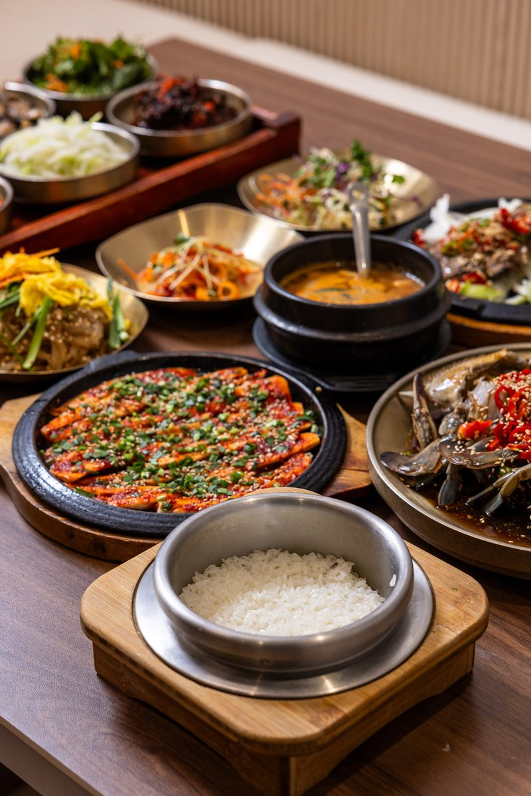
일품 정식
60,000원2인 이상
전채요리, 소갈비찜, 더덕구이, 간장게장1/2, 장어구이(100g), 명태회무침 계절밥상과 이천쌀 솥밥
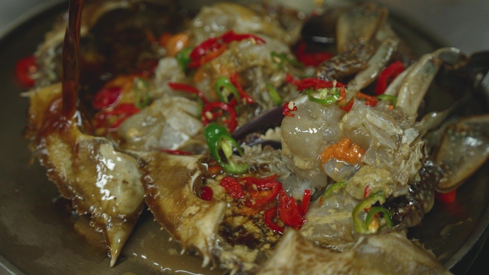
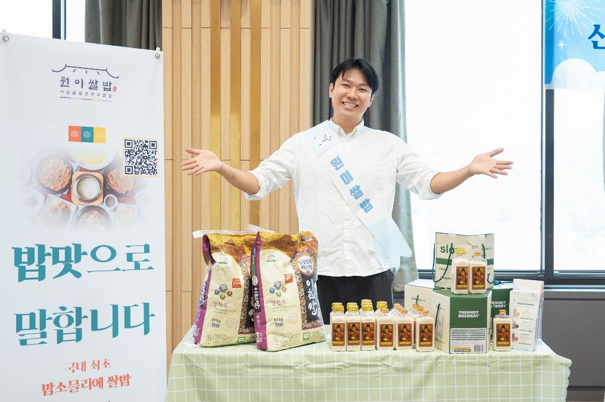
OWNER CHEF · RICE SOMMELIER · KOREAN CUISINE MASTER
신종찬 대표오너쉐프 · 밥소믈리에 · 한식대가
밥은 밥소믈리에로, 한식은 한식대가로.
이천쌀 한 가지를 20년 파고든 끝에 한식의 기본을 다시 세웁니다.
RICE
갓 도정한 쌀을 밥소믈리에로서 쌀의 품질과 신선함을 엄격하게 선별하여, 최적의 밥짓기 과정을 통해 깊은 풍미의 쌀밥을 대접합니다.
KOREAN CUISINE
밥이 기준이라면, 한식은 정성입니다. 씨간장으로 20년을 이어온 간장게장, 직접 담근 된장·고추장·청국장, 매일 끓이는 육수와 직접 만든 맛간장. 보이지 않는 곳에서 타협하지 않는 것이 원이쌀밥의 한식입니다. 봄엔 봄을, 가을엔 가을을 상에 올립니다.
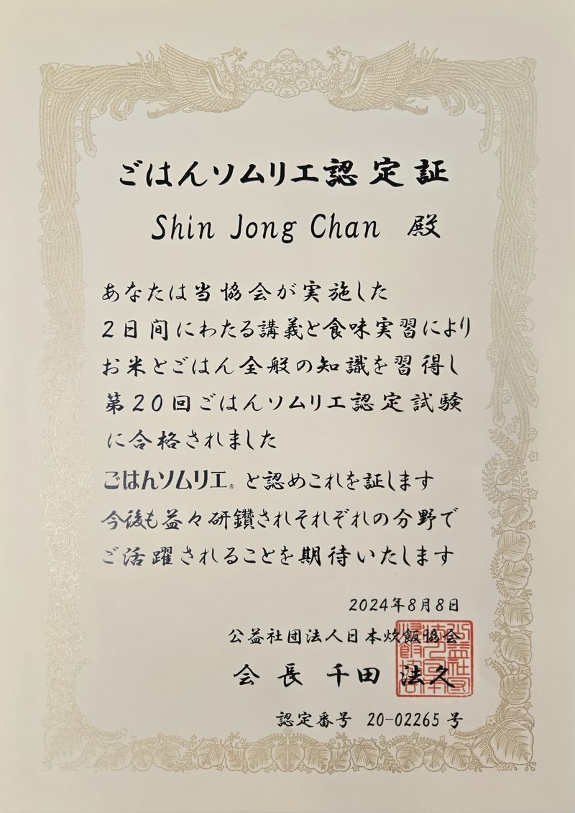
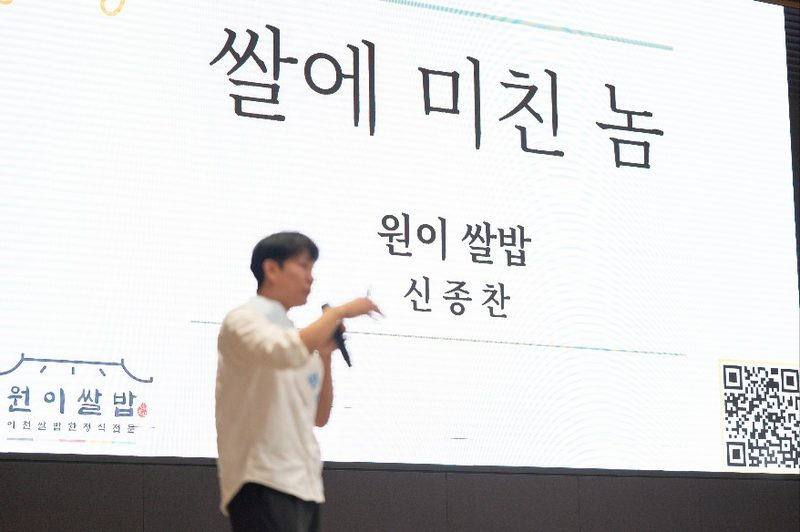
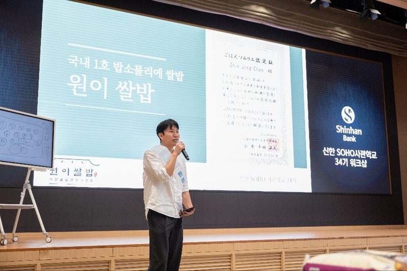
BRAND STORY
Want Eat Rice Gourmet
우리는 맛집이 아닙니다.
한 사람의 인생이 차곡차곡 쌓이는 밥상입니다.
변하지 않는 것
우리는 매일 쌀을 새로 도정합니다. 육수도 직접 끓이고, 맛간장도 직접 만듭니다.
변하는 것
봄엔 봄을, 가을엔 가을을 상에 올립니다.
남는 것
음식 맛은 일주일이면 흐려지지만, 그날의 응대는 30년이 가요.
원이(元利)라는 이름
유래 문구 입력 예정
RICE STORY
7일
임금님표 이천쌀
7일 이내
솥밥, 갓 지어 상에
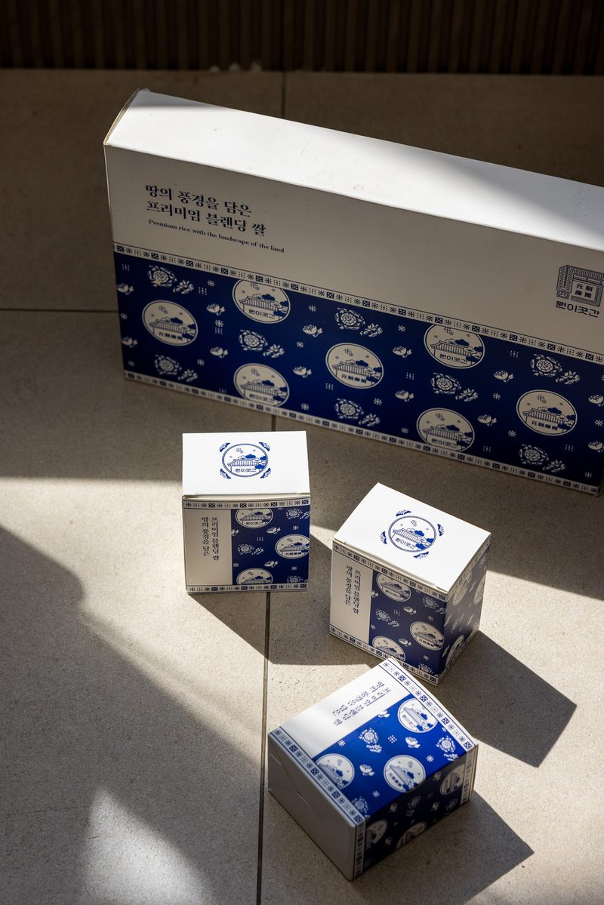
원미 元米
임금님표 이천쌀 · 밥소믈리에 블렌딩쌀 원미(元米)
알찬미 × 골드퀸3호 × 진상미, 찰기·향·윤기 '세 겹의 밥맛'
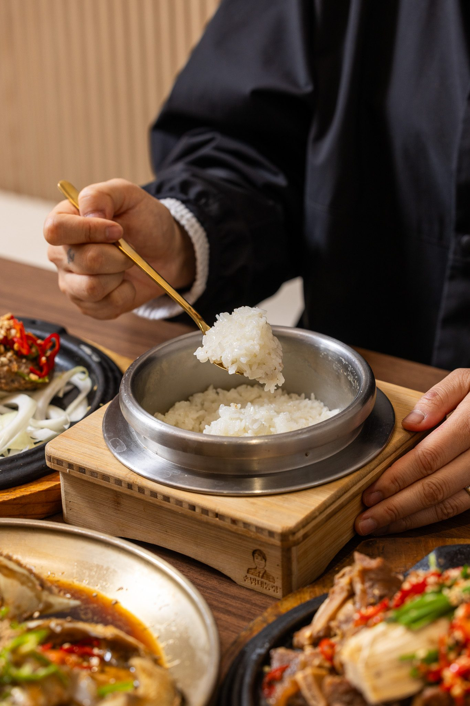
SPACE
이천 한옥 한정식 · 서까래 홀 · 창가 좌석 · 룸(단체석) · 유기 그릇에 담아 냅니다
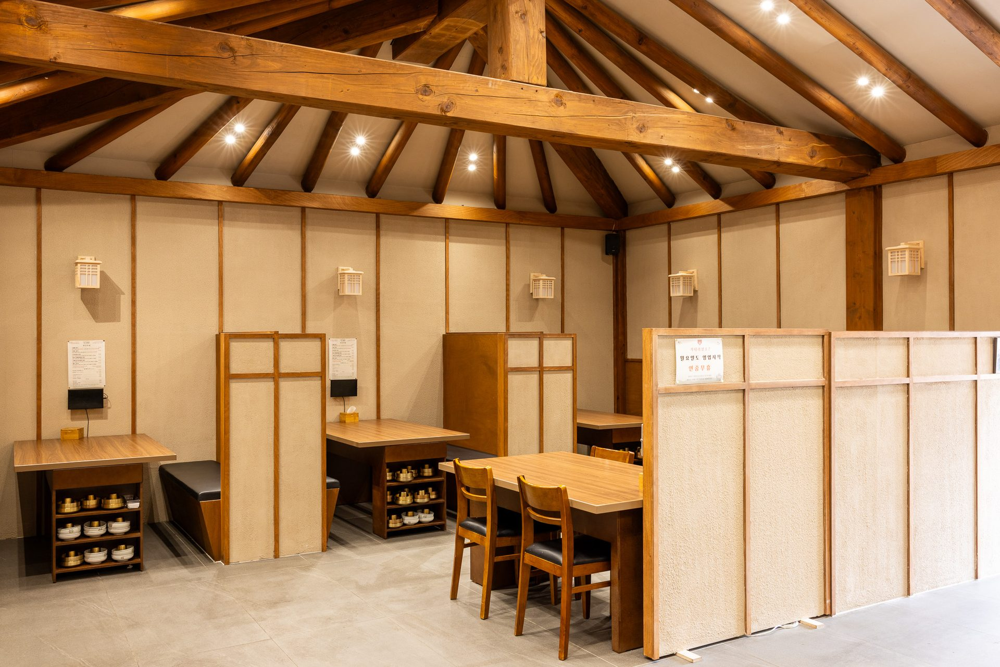
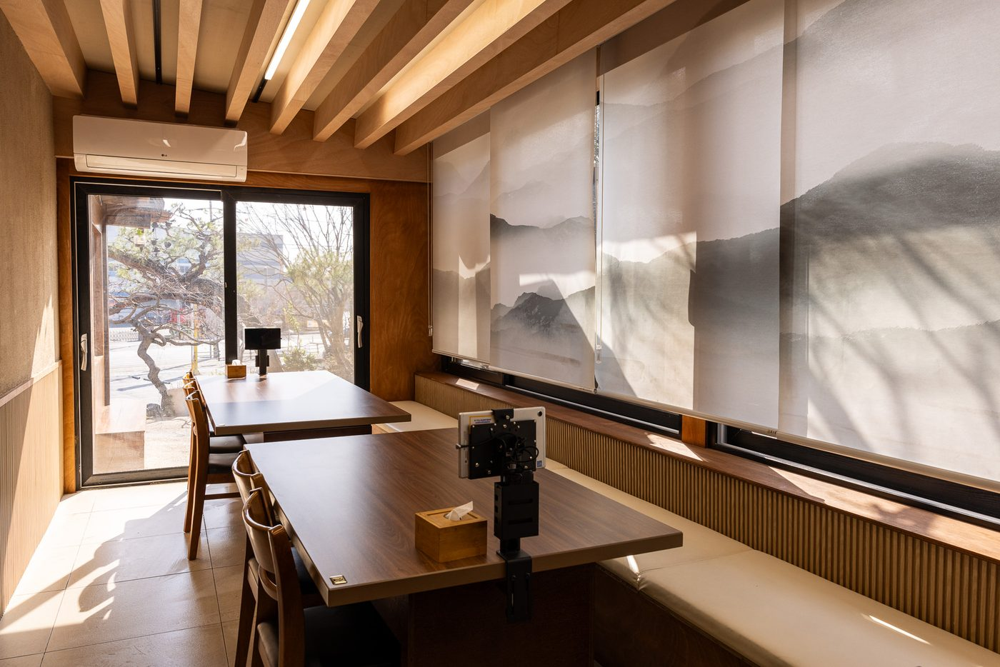
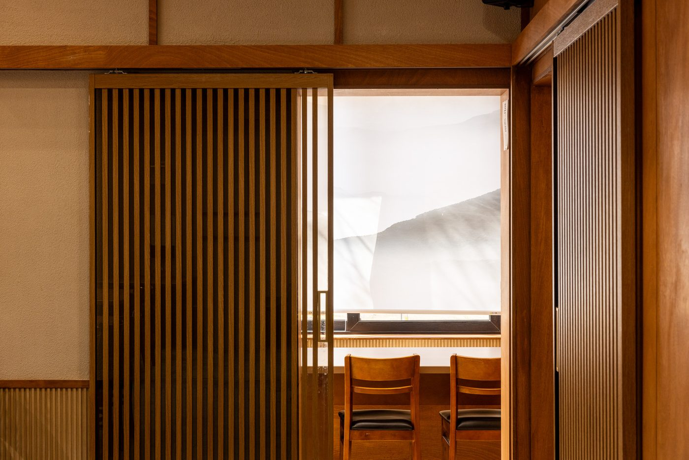
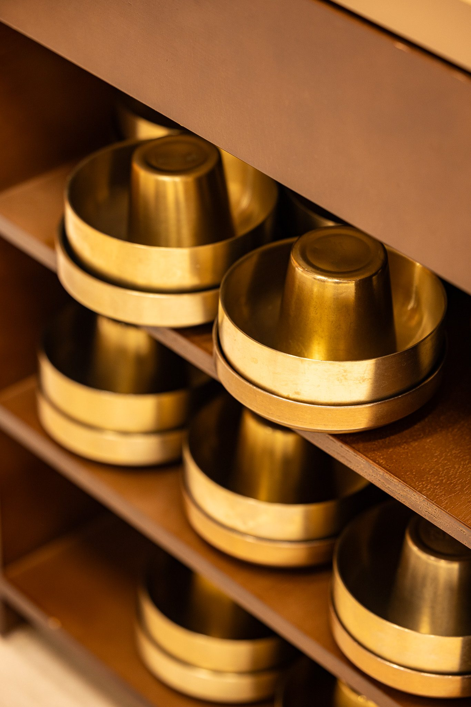
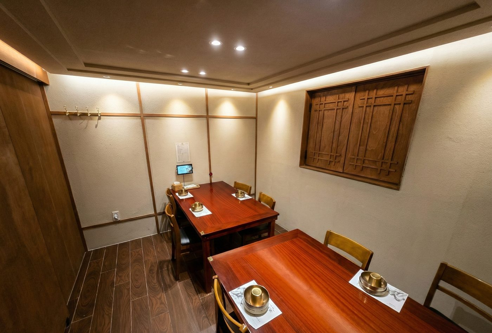
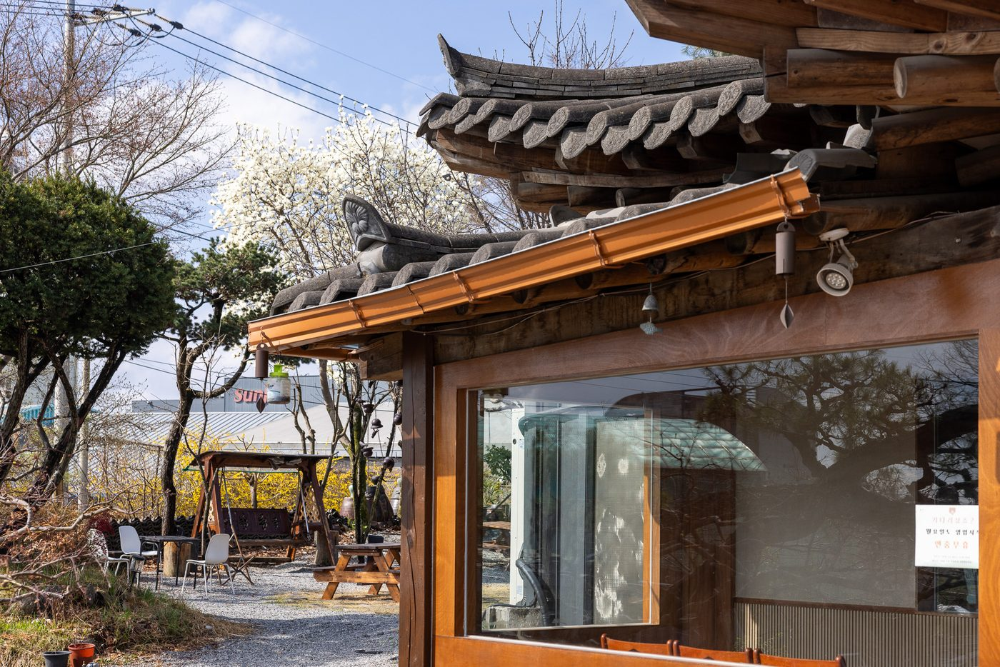
NEARBY ICHEON
테르메덴·시몬스 테라스·설봉공원·이천 도자예술마을에서 가까운 이천쌀밥 한정식. 골프 라운딩 전후 식사, 상견례·돌잔치·칠순·팔순·환갑 가족모임까지 룸에서 편하게.
매년 10월 이천쌀문화축제가 열리는 쌀의 고장, 이천.
상견례 · 돌잔치 · 칠순 · 팔순 · 환갑 · 회식
룸·단체석 문의 · SK하이닉스 이천캠퍼스 인근 회식·접대
표시된 장소는 원이쌀밥과 무관한 별도 시설이며, 거리는 원이쌀밥 출발 도로 기준 약값입니다. 소요시간은 교통 상황에 따라 다릅니다.
PRESS & CERTIFIED
FAQ
2006년 문을 연 경기 이천시 대월면의 이천쌀밥 한정식집입니다. 임금님표 이천쌀 지정업소로, 7일 이내 도정한 이천쌀로 솥밥을 짓고 한옥에서 한상차림을 냅니다. 블루리본 서베이에 선정되었습니다.
네. 대표 신종찬은 일본취반협회 공인 밥소믈리에(2024년 인정)로 국내 최초 밥소믈리에이며, 대한민국한식포럼 선정 대한민국 한식대가(2026)입니다. 쌀 선별부터 밥짓기까지 대표가 직접 기준을 정합니다.
일품 정식 60,000원, 만찬 정식 50,000원, 풍천 장어구이 정식 42,000원, 20년 辛씨 간장게장 정식 39,000원, 이천한우쌀 떡갈비 정식 36,000원, 누룩소금 보리굴비 정식 35,000원, 원이 정식 29,000원입니다. 일품·만찬·원이 정식은 2인 이상이며, 초등(6세) 이상은 1인 1정식입니다.
임금님표 이천쌀을 7일 이내 도정해 씁니다. 밥소믈리에가 알찬미·골드퀸3호·진상미를 블렌딩한 쌀 '원미(元米)'로 찰기·향·윤기를 맞춥니다.
네이버 예약 또는 전화 031-636-0893으로 예약할 수 있습니다. 주말은 대기가 있을 수 있어 방문 전 예약을 권합니다.
평일 10:30~20:45, 주말 10:20~20:30(주말 브레이크타임 15:30~16:00)입니다. 연중무휴이며 월요일도 영업합니다.
매장 앞 무료 주차장이 있고 대형버스 주차가 가능합니다. 룸과 단체석이 있어 상견례·가족모임·회식에 이용할 수 있습니다.
일품요리는 전 메뉴 포장이 가능합니다. 직접 담근 된장·고추장·청국장도 매장에서 판매합니다.
SBS 생방송투데이, KBS 2TV 생생정보에 소개되었습니다.
네. 테르메덴·시몬스 테라스(약 9 km), 미란다호텔 스파플러스(약 7 km), 설봉공원(약 9 km), 롯데프리미엄아울렛 이천점(약 14 km), 국립이천호국원(약 15 km)에서 차로 오실 수 있고, 이천도자예술마을 예스파크·사기막골 도예촌과도 같은 이천 시내권입니다. 이천IC 인근이라 서울·수도권에서도 접근이 쉽습니다.
네. 더반GC(같은 대월면), 사우스스프링스CC·이천마이다스(약 12 km), 비에이비스타CC·솔모로CC·아리지CC(약 13 km), 뉴스프링빌CC·트리니티클럽(약 15 km) 등 이천·여주·광주·용인 권역 40여 골프장에서 차로 40분 안팎입니다. 단체석과 룸이 있어 라운딩 전후 식사에 맞고, 2인 이상 정식과 일품요리를 함께 주문할 수 있습니다.
네. 룸과 단체석이 있어 상견례, 돌잔치, 칠순·팔순·환갑 가족모임, 회식에 이용하실 수 있습니다. 인원과 날짜는 네이버 예약 또는 전화 031-636-0893으로 미리 알려 주세요.
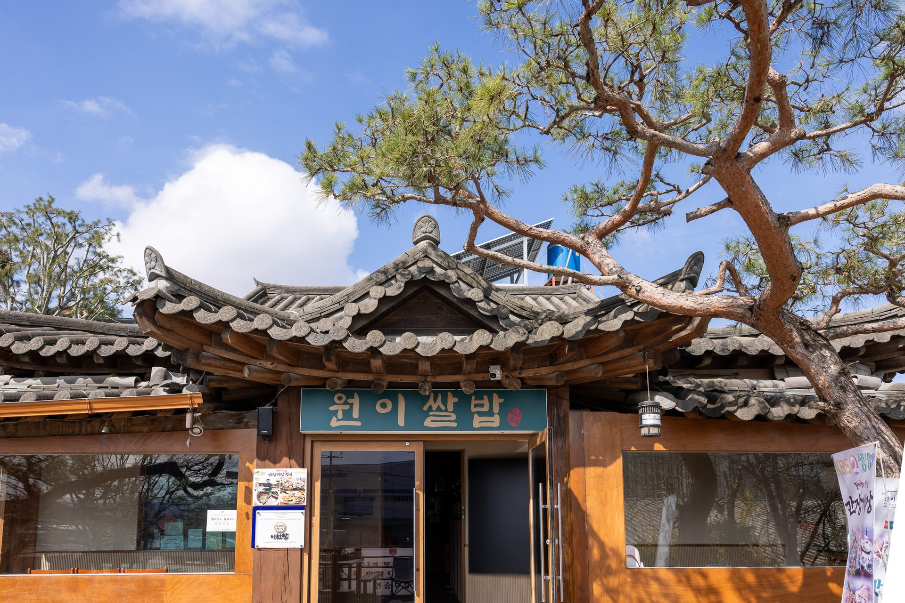
VISIT & RESERVATION